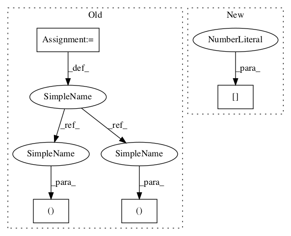

a1f8ebb0c6d04e6583ed9d9f06a89b8d5d53e8f0,niftynet/network/interventional_affine_net.py,INetAffine,layer_op,#INetAffine#Any#Any#Any#,43

Before Change
moving_image = Resize(spatial_shape)(moving_image)
img = tf.concat([moving_image, fixed_image], axis=-1)
res_1, _ = DownRes(self.fea[0], **self.res_param)(img, is_training)
res_2, _ = DownRes(self.fea[1], **self.res_param)(res_1, is_training)
res_3, _ = DownRes(self.fea[2], **self.res_param)(res_2, is_training)
res_4, _ = DownRes(self.fea[3], **self.res_param)(res_3, is_training)
conv_5 = Conv(n_output_chns=self.fea[4],
After Change
// resize the moving image to match the fixed
moving_image = Resize(spatial_shape)(moving_image)
img = tf.concat([moving_image, fixed_image], axis=-1)
res_1 = DownRes(self.fea[0], **self.res_param)(img, is_training)[0]
res_2 = DownRes(self.fea[1], **self.res_param)(res_1, is_training)[0]
res_3 = DownRes(self.fea[2], **self.res_param)(res_2, is_training)[0]
res_4 = DownRes(self.fea[3], **self.res_param)(res_3, is_training)[0]
In pattern: SUPERPATTERN
Frequency: 3
Non-data size: 4
Instances
Project Name: NifTK/NiftyNet
Commit Name: a1f8ebb0c6d04e6583ed9d9f06a89b8d5d53e8f0
Time:
Author: null
File Name: niftynet/network/interventional_affine_net.py
Class Name: INetAffine
Method Name: layer_op
Project Name: openai/baselines
Commit Name: b71152eea0470ac2629c33e0fc66a54fe494949f
Time:
Author: null
File Name: baselines/common/vec_env/dummy_vec_env.py
Class Name: DummyVecEnv
Method Name: step_wait
Project Name: tensorlayer/tensorlayer
Commit Name: a776728ed39a5ee9b3f3ad84fa2e76c1c5717277
Time:
Author: null
File Name: examples/reinforcement_learning/tutorial_DPPO.py
Class Name: Worker
Method Name: work
Project Name: NifTK/NiftyNet
Commit Name: a1f8ebb0c6d04e6583ed9d9f06a89b8d5d53e8f0
Time:
Author: null
File Name: niftynet/network/interventional_affine_net.py
Class Name: INetAffine
Method Name: layer_op